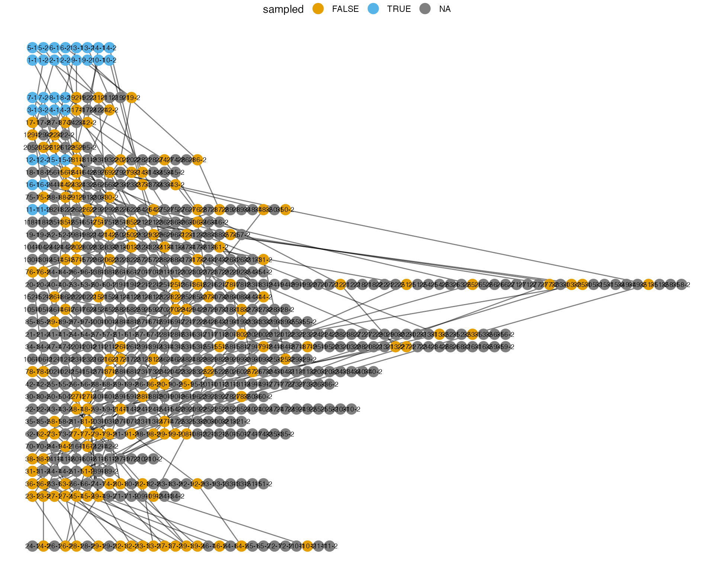

result = tekka("--seed 42 -y40 -K100 -r2 -l2 --sa 2,2 --sj 2,2") samples = result$sample_family[[1L]] make_snp(samples, ss = c(1L, 2L)) #> [,1] [,2] [,3] #> [1,] 0 0 0 #> [2,] 0 0 0 #> [3,] 0 1 0 #> [4,] 0 0 0 #> [5,] 0 0 0 #> [6,] 0 1 0 #> [7,] 0 0 0 #> [8,] 0 1 0 #> [9,] 0 0 0 #> [10,] 0 0 0 #> [11,] 0 0 0 #> [12,] 0 0 0 #> [13,] 0 0 0 #> [14,] 0 0 0 #> [15,] 0 0 0 #> [16,] 0 0 0 #> [17,] 0 1 0 #> [18,] 0 1 0 #> [19,] 0 0 0 #> [20,] 0 0 0 #> [21,] 0 1 0 #> [22,] 0 0 1 #> [23,] 0 1 0 #> [24,] 0 1 0 #> [25,] 0 1 0 #> [26,] 0 0 0 #> [27,] 0 0 0 #> [28,] 0 0 0 #> [29,] 0 0 0 #> [30,] 0 0 0 #> [31,] 0 0 0 #> [32,] 1 0 0
segments = gather_segments(samples) genealogy = make_gene_genealogy(segments) plot(genealogy) + theme_void() + theme(legend.position = "top")
